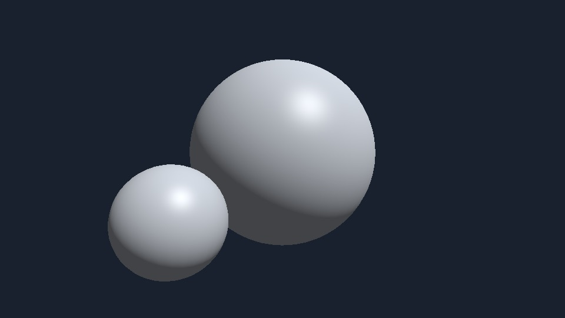

OpenGL
程序自己生成网格和矩阵，片元着色算 Blinn-Phong。光栅和深度测试交给 GPU，画进离屏帧缓冲，再读回像素。

01核心配置文件 4.1。顶点数组、缓冲和着色器都是显式的，没有固定管线。
02模型、观察和投影矩阵分开传入。深度测试让前面的球挡住后面的球。
03颜色写到纹理，深度写到 renderbuffer，glReadPixels 取出这一帧。
源码在 renderers/opengl/offscreen.mm。macOS 上 OpenGL 已标记弃用，这里仍用它说明这条管线。